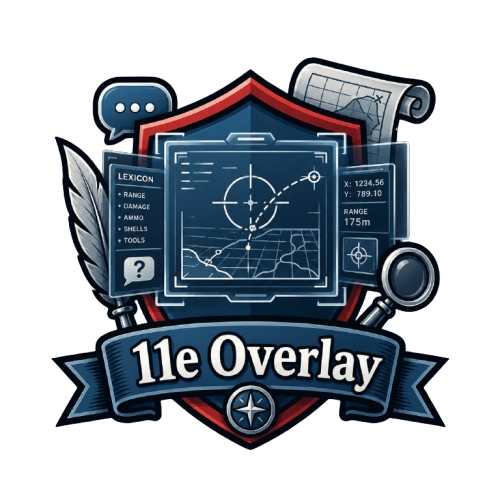

11eOverlay
Overlay de jeu transparent pour Foxhole, intégré à l'API ArtyCon.
Groupes d'artillerie, batteries, cibles et solutions de tir en temps réel.
Fonctionnalités
- Overlay transparent par-dessus le jeu, toujours au premier plan.
- Temps réel via Server-Sent Events depuis l'API ArtyCon.
- Authentification OAuth Discord ou login local.
- Hotkeys globaux configurables pour afficher/masquer l'overlay.
- Léger et natif : Tauri v2 + Rust, empreinte mémoire minimale.
Installation
- Téléchargez le zip ci-dessus.
- Extrayez
11eOverlay.exeoù vous le souhaitez. - Lancez l'exécutable et authentifiez-vous.